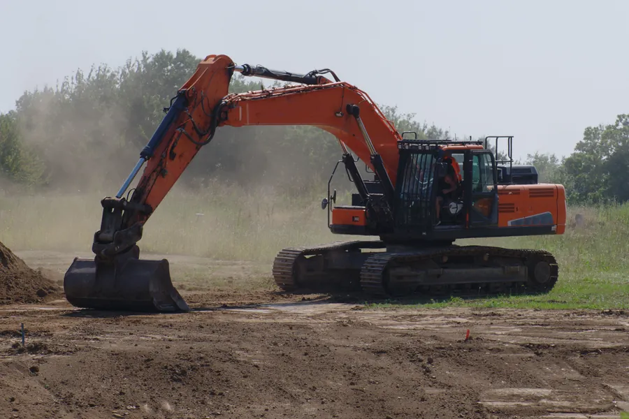
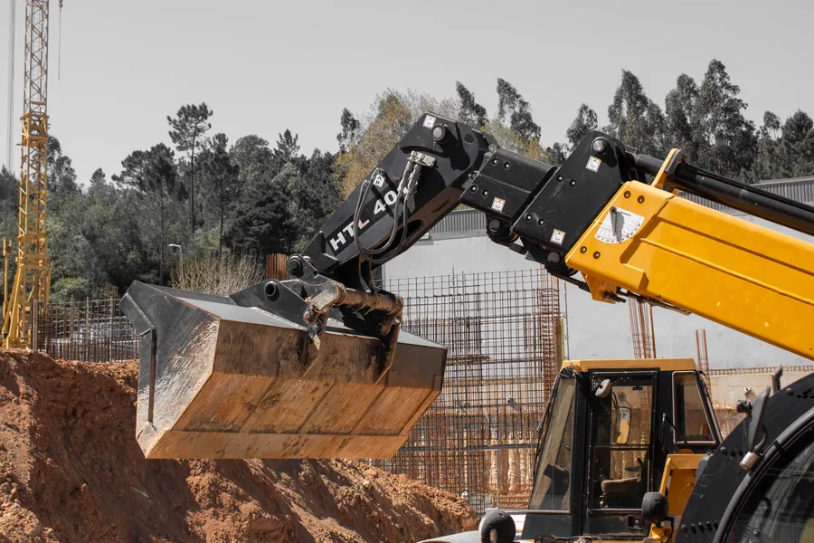
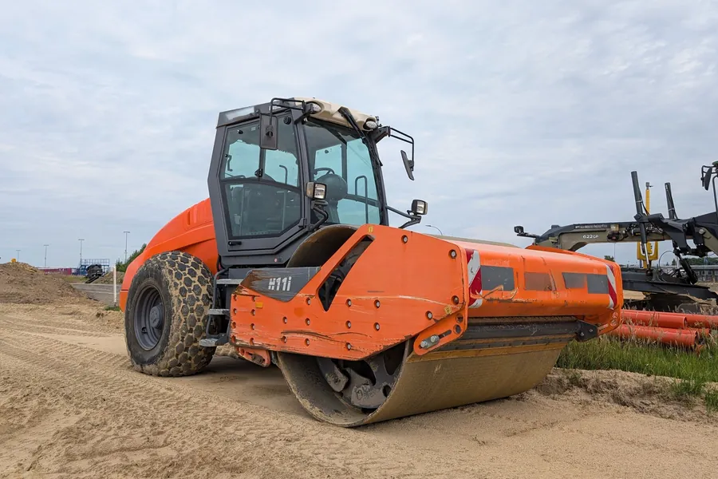
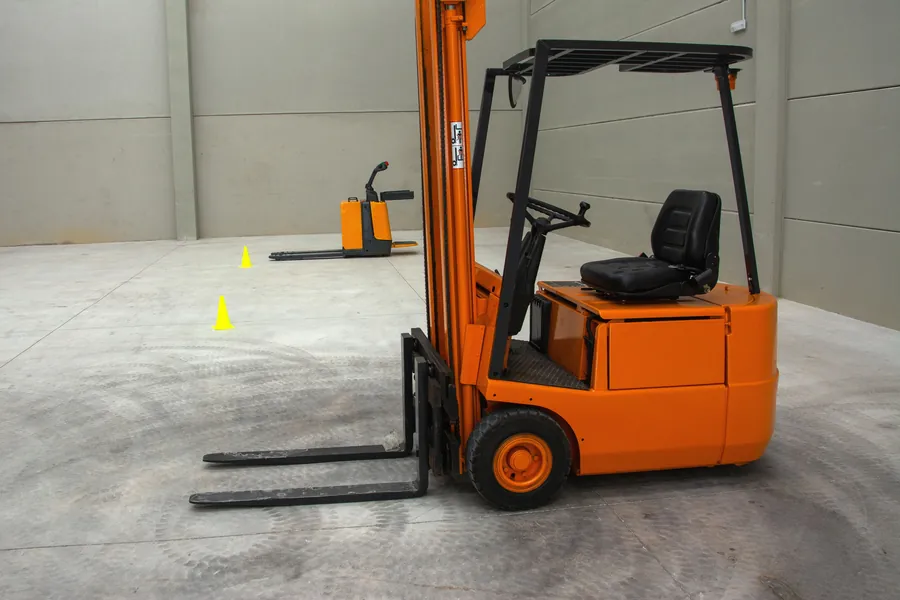
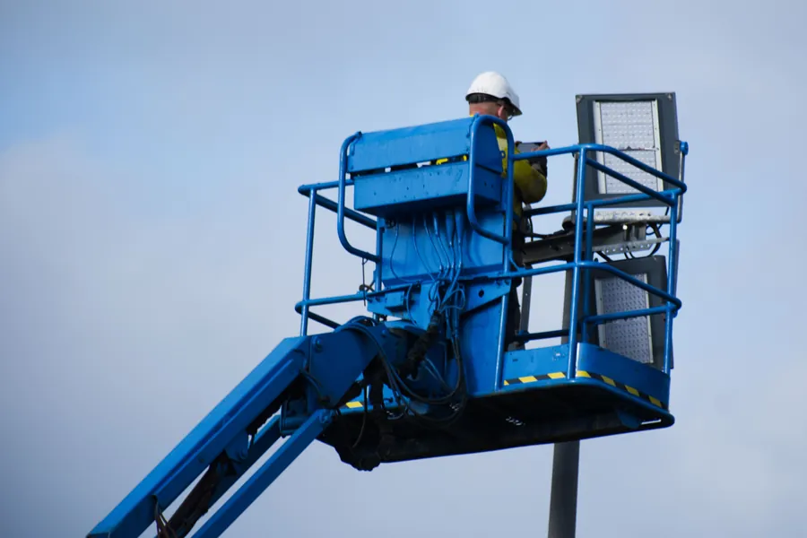
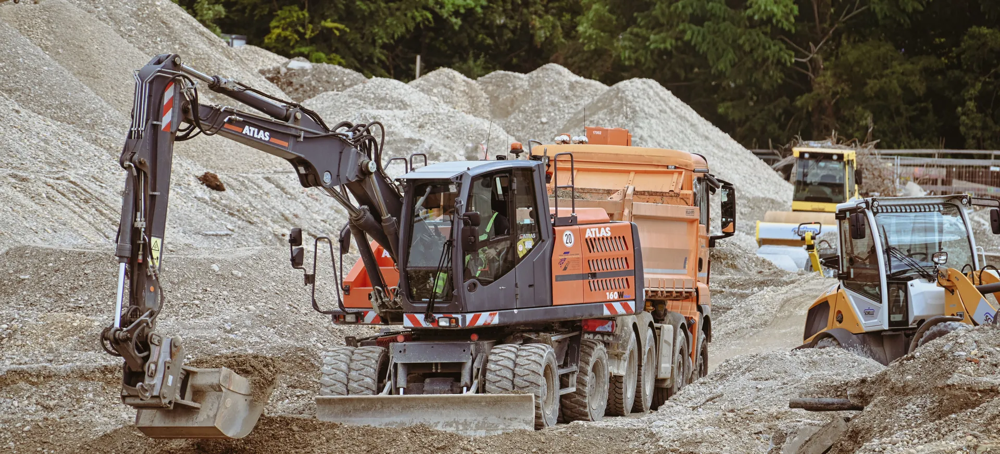
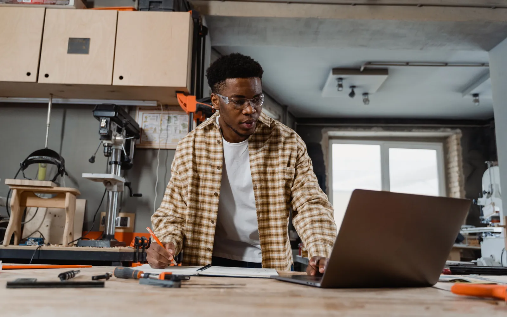
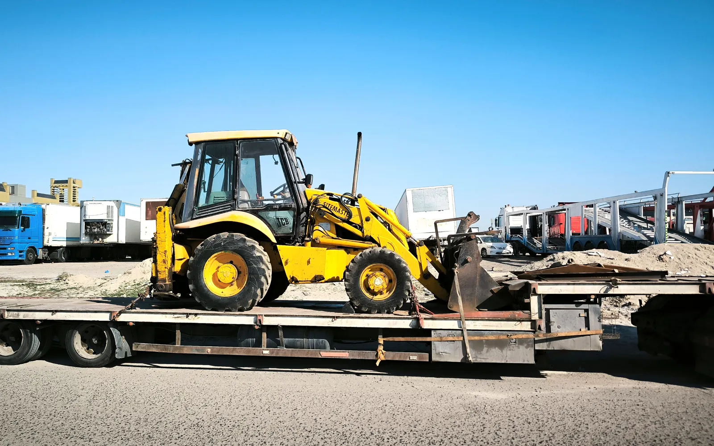

Construction plant, lifting and access equipment
Universal Auctions Group runs trade-only plant and machinery auctions online for construction plant, earthmoving, lifting, access and material-handling equipment located across the UK. Trade buyers bid from anywhere in the UK or overseas, and each machine stays at its site until it is sold and paid for.
Buying
Excavators, telehandlers, dumpers, rollers and access equipment
Sold in trade-only timed online auctions. Registration is free and you bid from the cabin, the yard or your phone.
Selling
For hire firms, contractors, dealers, lenders and administrators
Machines are sold from your yard or site to trade buyers across the UK and overseas. We handle invoicing and provide the sale and settlement documentation.
Stock changes from sale to sale, from compact site kit to large earthmoving, lifting and access machines. These are the categories buyers watch for.

Excavators and diggersTracked and wheeled excavators, mini diggers and backhoe loaders, with buckets and attachments listed where included.
Telehandlers and loadersConstruction telehandlers and loading shovels, with lift height, capacity and hours shown where the seller supplies them.
Rollers and compactionRide-on and pedestrian rollers, plate compactors, trench rammers and other compaction equipment.
Forklifts and material handlingCounterbalance and rough-terrain forklifts, reach trucks and warehouse handling equipment.
Access platforms and liftingScissor lifts, boom lifts and other powered access, plus cranes and lifting equipment.Plant hire firms refreshing their fleets, contractors at the end of a project, demolition and groundworks companies, dealers, lenders recovering equipment, and businesses closing down.
Each lot shows the make, model, year, serial number and hour reading where the seller supplies them, with photographs and any buckets or attachments that come with the machine.
Machines are sold from yards, depots and sites around the UK, so the lot location is the first thing to check. Universal Auctions Group acts as auctioneer and agent for the seller. Check the lot details and auction terms before bidding.

For trade buyers
A wide range of plant and machinery is offered, with descriptions and photographs supplied by sellers. The price is set by open bidding, and you can buy from anywhere.
Worth watching every sale
Stock varies from auction to auction, so the machine you are short of can appear in any sale.
The price is set by the bidding
Every lot is open to every registered trade buyer, and you can see the bidding as it happens. Bidding starts at the stated opening bid, and lots are subject to any reserve price.
Attachments listed with the machine
Buckets, forks, breakers and quick hitches are listed with the lot where the seller includes them, so you can see what comes with it before you bid.
Trade-only, online, from anywhere
You bid against other businesses, from the cabin, the office or your phone, wherever the machine happens to be.

Four steps, from registering to collecting what you have won.
Register to bid
Registration is free. Manual approval and identification may be required before an account can bid, so register ahead of the sale you are watching.
Read the lot and set your maximum
Each lot carries the seller's description, photographs and hour reading, its VAT treatment, and the buyer's premium on its Additional Fees tab. Add them up and decide your ceiling before the lot closes.
Bid in the timed online auction
Bidding normally remains open for several days, with the exact opening and closing times stated for each auction. In our current timed-auction format, a bid in the last ten minutes extends that lot by ten minutes, so nobody wins on the buzzer.
Pay and collect
We invoice you after the sale, payable in full by bank transfer within 24 hours. Once your payment clears we release the collection details, and you collect from the stated location by appointment.
The full buying process, costs and collection are on the buying page.
Before you bid
Price the whole job before you set a maximum: the machine, the haulage, and anything it needs before you put it to work.
Viewings are available by appointment and are strongly recommended. Buyers should satisfy themselves about the machine's condition, specification and suitability before bidding.
Treat hour readings as the seller's figure unless the lot states otherwise, and compare them with the service records, the photographs and the wear you can see on tracks, pins and buckets. On lifting equipment, check what LOLER and PUWER paperwork comes with the machine, and plan any thorough examination it needs before it goes into service.
Plant is heavy and often awkward to load. Check the exact location, access and loading arrangements, and the machine's dimensions and weight, and book transport that suits it. Buyers are responsible for arranging collection and transport. Any delivery option specifically stated within a lot is provided by the seller and subject to separate agreement.

For sellers
We run online sales for hire firms, contractors, dealers, lenders, administrators and owners, and every lot is open to trade buyers across the UK and overseas.
No selling fees
You retain 100% of the hammer price. You agree the reserve before listing, and machines remain at the stated location until paid for and collected.
Sold from your yard
Nothing has to go to an auction site first.
Paid before anything leaves
Collection is authorised only after the buyer has paid, and the seller is ordinarily paid within 24 hours of our receiving cleared funds.
Invoicing and documentation
We handle invoicing and provide the seller with the sale and settlement documentation.
How a sale is set up is explained on our pages for sellers: why sell with us, how selling works and asset disposal for administrators and receivers.
The questions buyers and sellers ask before their first plant sale. For anything else, get in touch.
A sale of construction plant, lifting, access and material-handling equipment by open bidding. At Universal Auctions Group these sales run as trade-only timed online auctions, so registered business buyers bid remotely. The highest bid at the close wins the lot, provided the reserve has been met and subject to the auction terms.
Hour and meter readings are supplied by the seller unless the lot expressly states a different basis. Compare them with the service records, the photographs and the condition of the machine, and ask us for anything else you need while the lot is still open.
Plant hire firms refreshing their fleets, contractors at the end of a project, demolition and groundworks companies, dealers, lenders and businesses closing down. Universal Auctions Group acts as auctioneer and agent for the seller. Check the lot details and auction terms before bidding.
A 20% buyer's premium plus VAT is payable in addition to the hammer price. VAT on the hammer price applies where stated in the lot description. Buyers must also allow for collection and transport costs.
Payment is due in full by bank transfer within 24 hours of the invoice. Collection is by appointment once your payment has cleared, within the period stated in that sale's terms. Book transport that suits the machine's size and weight before the lot closes.
Yes. Overseas trade buyers are welcome to participate, and export buyers arrange their own transport and export documentation. On an export sale the VAT is charged as a deposit, and any refund is conditional on satisfactory export evidence reaching both the seller and us within 28 days of the invoice, in accordance with the auction terms. VAT on the buyer's premium is not refundable.
Yes. We run sales for hire firms, contractors, dealers, lenders, administrators and owners, from a single machine to a whole fleet. Machines are sold from your yard or site and buyers collect after paying. Talk to us about what you have and your timetable.
Lots are sold as seen, where lying. Descriptions and photographs come from the seller, so form your own view of each machine, and ask us for anything else you need while the lot is still open.
For buyers
For sellers
Register ahead of the auction to allow time for any identification checks and bidding approval.
Looking for something else? Browse by category:
Selling plant or machinery? Talk to us about a sale.
Every sale is governed by the auction terms and conditions.